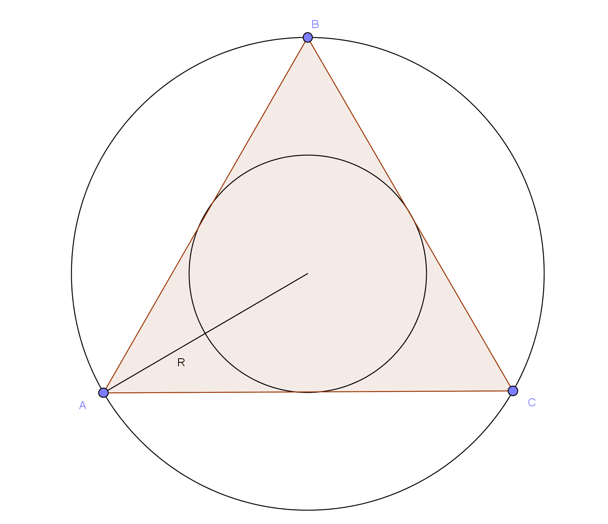
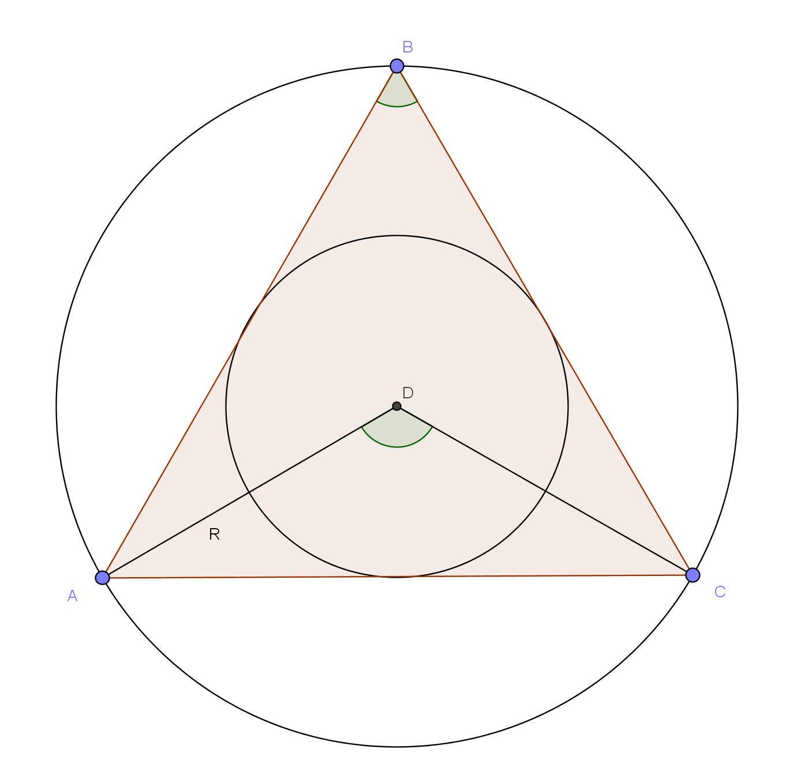
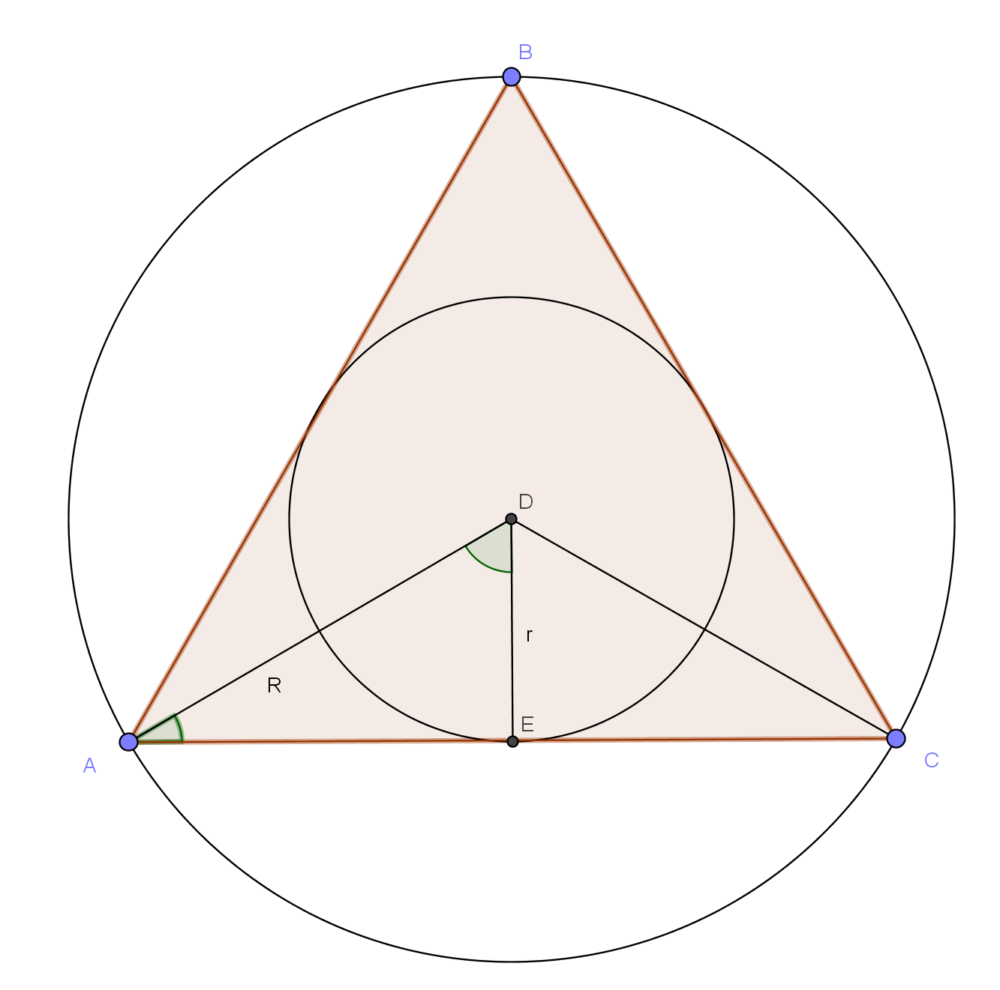

For an isosceles triangle $ABC$ with congruent angles $A$ and $C$,
what is the radius $r$ of the incircle given the magnitude of the angles and the radius $R$ of the circumcircle?

To illustrate the investigation, an equilateral triangle will be constructed according to the parameters.

Since angle $B$ is known, the magnitude of angle $ADC$ is twice that of $B$ as the magnitude of a central angle is double that of an inscribed angle.

Hence, the magnitude of angle $ADE$ is half that of angle $ADC$ which is equal to that of angle $B$. Therefore, $AE$ is equal to $Rsin(B)$. As the center of an incircle is the intersection of a triangle's angle bisectors, the magnitude of angle $DAE$ is half that of angle $A$. The value of $r$ can then be found to be equal to $Rsin(B)tan(\frac{a}{2})$.